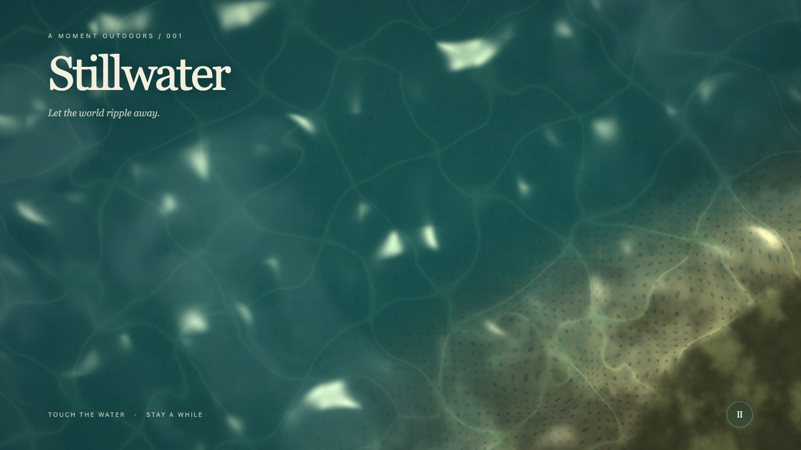
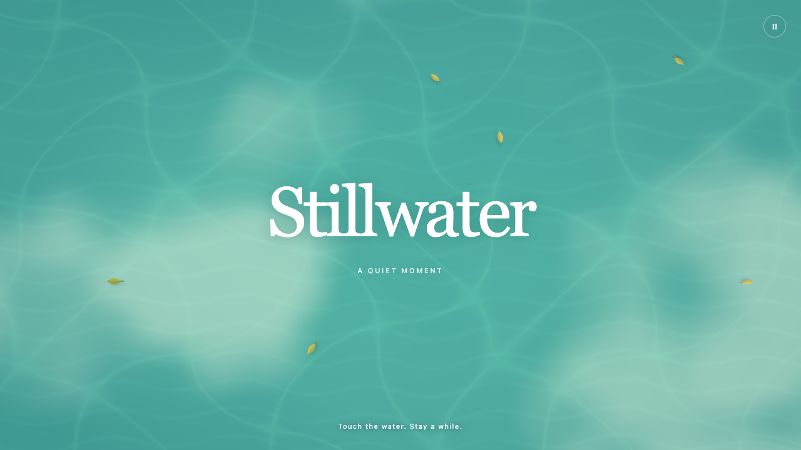
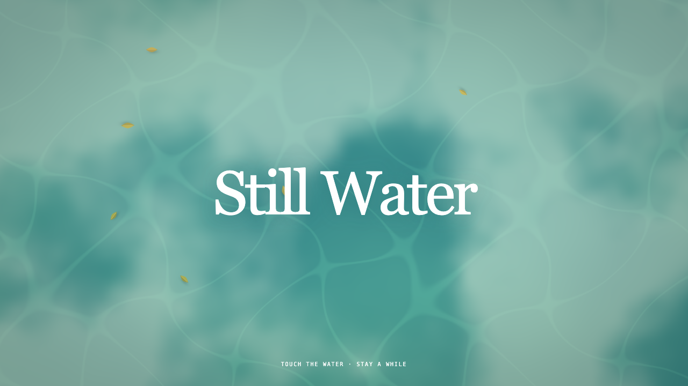

Run 1
Basic task only

The model invented dark, realistic water, bright floor reflections, and a shoreline.
Open interactive Run 1Basic task only

The model invented dark, realistic water, bright floor reflections, and a shoreline.
Open interactive Run 1Visual and interaction context added

The added visual direction produced brighter illustrated water, broad reflections, and drifting leaves.
Open interactive Run 2Visual and technical context added

The appearance stayed close to Run 2, while the code followed the requested WebGL structure more closely.
Open interactive Run 3Visual context caused the clearest visible change. Technical context had a smaller effect on appearance but improved compliance with the requested implementation.